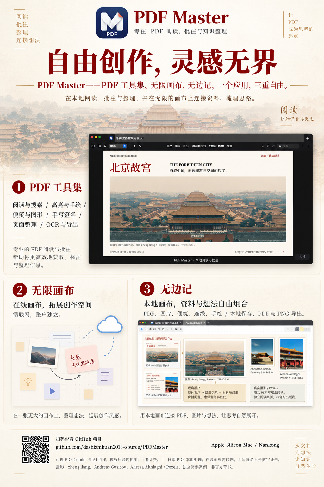

PDF 工具集 · 阅读，让知识看得更远。
阅读与搜索、高亮与手绘、便签与图形、手写签名与页面整理。获取、标注与整理信息，让理解留在页面里。
专注 PDF 阅读、批注与知识整理
PDF 工具集、无限画布、无边记——一个应用，三重自由。在本地阅读、批注与整理，在画布中连接资料、梳理思路，让 PDF 成为思考的起点。
V0.1.22 / build44 · 30.1 MB · Apple 芯片 · macOS 14+
免费提供 · 不出售软件 · 无需购买 Apple 开发者会员即可下载
标出重点，写下理解。把一页资料，变成一条属于你的思路。
阅读与搜索、高亮与手绘、便签与图形、手写签名与页面整理。获取、标注与整理信息，让理解留在页面里。
在内置节点画布上整理想法、延展灵感。基础编辑随应用提供；AI 生成需要联网、自备 Key，并由服务商独立计费。
本地画布连接 PDF、图片、便签、连线与手绘，自由组合资料与想法。本地保存，可导出 PDF 与 PNG；本地阅读与批注不会上传 PDF。
一份文档，无限可能 / THE TOOLKIT
每个工具都有明确的入口、用途与边界。找到需要的功能，就能开始。
多标签、缩略图、大纲与文字搜索。单页或双页，按你的节奏阅读。
专注阅读，不遗漏重点 02 / MARK↗高亮、下划线、便签、图形与自由手绘，让理解留在页面上。
选择、标注、随时撤销 03 / EDIT↗有限结构的原文修改、图片替换和链接管理。复杂文档保守拒绝，保护原件。
兼容范围以版本说明为准 04 / ORGANIZE↗排序、旋转、删除、提取与合并，把零散材料整理成顺畅的一份。
页面整理，思路更有序 05 / EXPORT↗图片、文字类文件转 PDF，页面输出 PNG / JPEG。格式和版式限制逐项说明。
不冒充完整 Office 格式转换 06 / REFINE↗选择压缩质量，本地识别扫描文字，添加可见页码或页标签。
保留副本，独立核对输出PDF、图片、便签、连线与手绘，在本地画布上自由组合。保存想法，也可以导出 PDF 或 PNG。
内置节点画布拓展创作空间。PDF Copilot 辅助阅读，联网发送前由你授权。
自备 Key · 第三方独立计费从文档到想法，让知识自然生长
原版产品海报与 30 秒介绍视频。阅读、批注、整理、连接想法——让灵感从这里延展。

阅读、批注、整理、连接想法。从文档到想法，让知识自然生长。
PDF 工具集获取、标注与整理信息。
无限画布组合节点，延展创作灵感。
无边记本地连接资料，让思考自由展开。
海报与视频为产品介绍，具体兼容范围以本页下载说明为准。摄影署名与素材权利说明见展示素材说明 ↗。
公开下载 / 开发预览
当前公开包仍有明确边界。我们把它们写在这里，不让你在安装后才发现。
build44 · 30,064,873 字节 · arm64
下载安装包b54acec6c9c0c645c39c9c9164e411c98b27704883548ebb5053c666acd94677面向 Apple 芯片 Mac，最低构建目标为 macOS 14；不支持 Intel Mac。本轮下载不提供 Windows 或 iPhone 版本。保存文档并正常退出旧版后，打开 DMG，将唯一的 PDF Master.app 拖入「应用程序」。
当前仅本地 ad-hoc 签名，macOS 可能阻止首次打开。只有你确认来源可信、包未被改动并愿意承担风险时，才考虑 Apple 官方的单应用确认流程；不关闭全局保护，也不保证所有设备可以放行。首次安装与安全提示 ↗ · Apple 官方说明 ↗
V0.1.22 使用独立原生内容与字体引擎，qpdf 已随包提供，不再依赖外置 Python、PyMuPDF 或 Homebrew。基础功能无需开发环境；复杂 PDF 仍有保守拒绝边界，不承诺任意文件兼容。
公开安装包与对应项目源码均为 V0.1.22 / build44，包含 Swift、画布前端、测试与构建说明。公开包经路径清理、兼容引擎替换和重新签名，不承诺自行构建后逐字节一致。查看功能、账户与依赖说明 ↗
几个直接的回答
不是。PDF Master 不收取软件费用；DMX、DeepSeek、Agnes 等第三方 AI 服务独立计费。你可以不配置 Key，继续使用不依赖 AI 的本地功能。
本地阅读、批注与整理不会上传 PDF。使用可选 AI 时，发送前需核对当前授权范围；PDF Copilot 发送所选可复制文字，不是 PDF 二进制。页面本身不嵌入统计脚本，GitHub 仍会按其隐私政策处理托管访问数据。
不是。免费下载不等于放弃版权或获得第三方素材授权。原创内容和第三方组件的许可分别适用。版权与使用条件 ↗
请在 GitHub 提交系统版本、应用版本和复现步骤，尽量使用自建最小示例。不要上传私人 PDF、账户信息、API Key 或带个人信息的截图。提交反馈 ↗